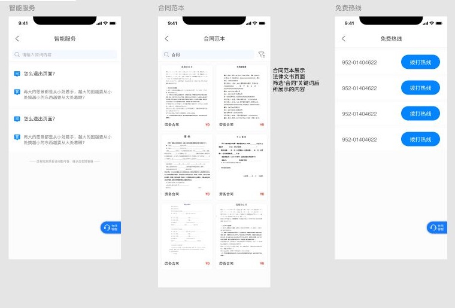

01 / Brief
Make public legal support easier to find, understand, and reach.
Falitang was my first project carried from structure and interface design through to public launch. The design needed to serve residents seeking immediate help while also connecting the wider service around lawyers, appointments, content, and legal documents.
The work treated the app as one part of a broader public-service system. Clear entry points, visible service status, and direct routes to a lawyer were prioritised over a content-heavy portal experience.
Find support
Legal education, service categories, and lawyer discovery create multiple routes into help.
Start a consultation
Text, voice, video, scheduling, and messaging support different levels of urgency.
Continue the service
Calendars, contracts, case information, and notifications keep the interaction connected.
02 / Product system
Four service surfaces, designed as one connected operating system.
FALITANG / MULTI-CHANNEL SERVICE ARCHITECTURE
Different interfaces. One continuous legal-service record.
Residents, lawyers, community staff, and hotline operators each receive the information and controls needed for their part of the service.Original interface source / Resident service
Real pages from the shipped design file.
Selected from the original design source to demonstrate service breadth while protecting personal and unpublished information.- Smart legal guidance
- Contract template library
- One-tap public hotline

Guidance, service discovery, consultation, appointments, documents, cases, and payment.
Consultation queue, availability, calendar, conversation records, and follow-up.
Service entry points, public information, queue status, and community guidance.
Incoming calls, routing, consultation status, escalation, and service records.
Shared service layer
- Identity
- Availability
- Appointment
- Consultation
- Documents
- Follow-up
Interface inventory
Many pages, organised by service responsibility and cross-channel continuity.
- 01Legal guidanceTopics and public education
- 02Service discoveryRoute users to the right help
- 03ConsultationText, voice, video, and hotline
- 04AppointmentsAvailability and scheduling
- 05MessagesStatus and follow-up reminders
- 06DocumentsTemplates, contracts, and records
- 07Case supportInformation and service progress
- 08PaymentService purchase and account flow
- 09OperationsQueues, reporting, and public display
Multi-channel access
Residents can enter through guidance, the app, a community display, or the public hotline.
Role-specific tools
Each surface keeps its own work focused while sharing the same service status and record.
Operational continuity
Appointments, conversations, documents, cases, and follow-up remain connected across channels.
03 / Public delivery
The product has independent public evidence of launch and use.
The Apple listing records the first version in August 2021 and keeps the product publicly discoverable. A Qingpu District Government article sourced from the Green Qingpu WeChat account reported the Smart Cloud Falitang service launching in two communities in December 2021.
The report describes online lawyer consultation, legal education, psychological support, remote mediation, data reporting, and round-the-clock lawyer access as part of the community service.